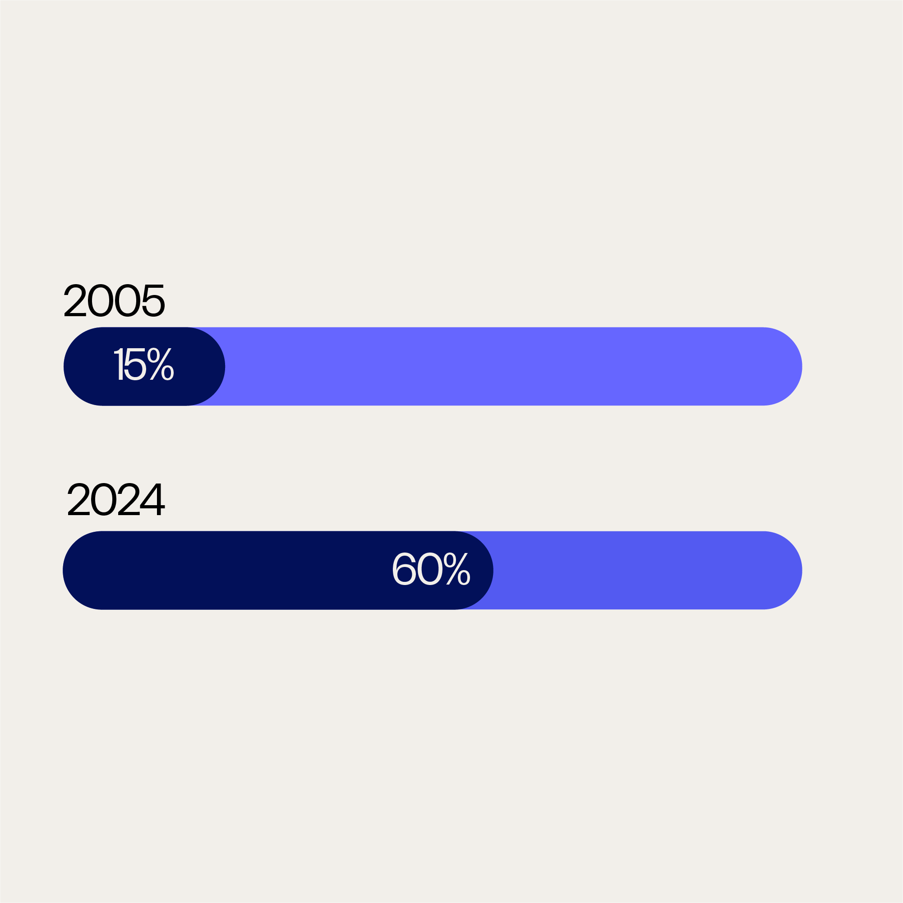
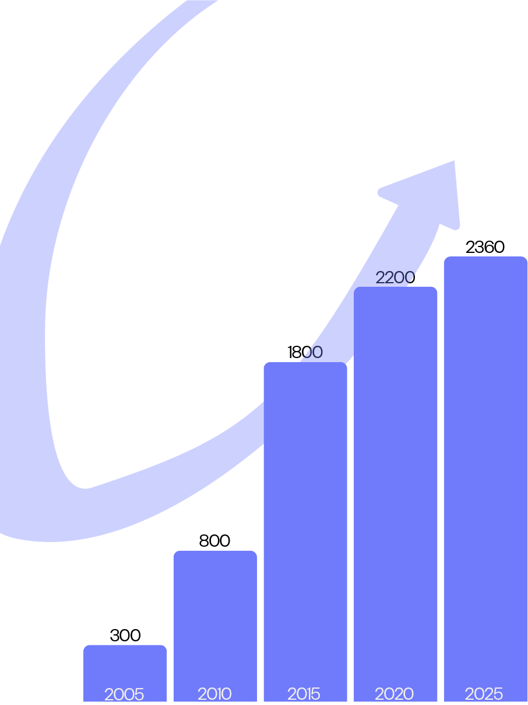

Progression de l'inclusion scolaire des enfants atteints d'un TND
Accès croissant à l'enseignement supérieur aux étudiants avec un TND
Taux de TND chez les enfants
Impact académique mesurable de l'inclusion
5 % des enfants présentent un TDAH (environ 1 enfant sur 20). Chez les filles, le TDAH est deux fois moins fréquent que chez les garçons.

Le changement le plus visible est la progression spectaculaire de l'inclusion scolaire pour les enfants atteints d'un TND. En 2005, seulement 15 % étaient scolarisés dans des classes ordinaires. Aujourd'hui, en 2024, ce taux a quadruplé pour atteindre 60 %.

De 2005 à 2025, le nombre d'étudiants présentant un TND s'est multiplié par 6.
Les enfants bénéficiant d'un accompagnement adapté en classe ordinaire affichent de meilleurs résultats scolaires et sociaux sur le long terme.
L'importance de l'Eye-Tracking
Chaque personne regarde le monde à sa façon. Chez certaines personnes atteintes d'un TND, le regard peut se poser différemment.